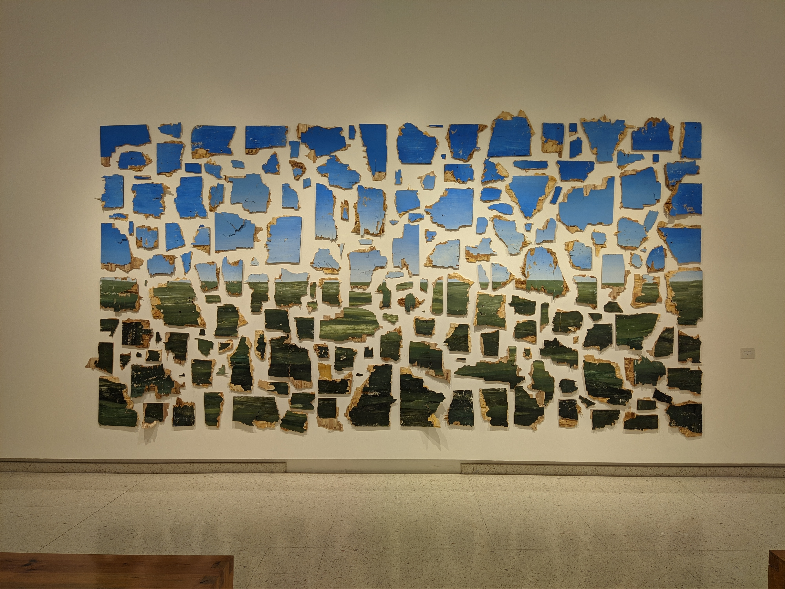

Looking for the next
opportunity to build
meaningful analytics systems.
The Next Challenge
After building experience across ERP systems, business intelligence, reporting automation, and operational analytics, I am currently looking for the next environment where I can continue growing both technically and strategically.
My goal is to contribute to teams that value analytical thinking, scalable systems, operational visibility, and data-driven decision making.
Technical & Business Perspective
What I’m Looking For
I am especially interested in opportunities involving:
Business Intelligence & Data Analytics
Creating scalable dashboards, operational reporting systems, and KPI-driven decision environments.
Modern Data Platforms
Working with cloud technologies, data warehouses, ETL pipelines, and enterprise-scale analytics ecosystems.
Process & Operational Intelligence
Solving business problems through automation, visibility, and structured operational analytics.
Let’s Build Something Valuable
Open to opportunities related to: Business Intelligence, Data Analytics, ERP Analytics, Reporting Automation, Cloud Data Solutions, and Operational Intelligence.
Interested in environments where technology, business understanding, and analytical thinking work together to create meaningful impact.